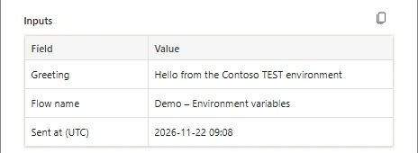
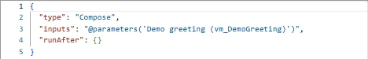

- Power Automate
- Level 6 · ALM and governance · 3 of 7
Environment variables
A flow in development posts to the test site and emails the test team. In production it must use the real site and the real team. Editing the flow after every deployment is slow and easy to get wrong. An environment variable holds the value outside the flow, so each environment can have its own value while the flow stays the same.
Default value and current value

| Part | What it does |
|---|---|
| Default value | Part of the definition. Used when there is no current value. |
| Current value | An override for this environment only. If it exists, it wins. |
Reading it in a flow
The demo flow reads the variable in a Compose. The run shows the current value, not the default:


@parameters('Demo greeting (vm_DemoGreeting)')| Piece | What it does |
|---|---|
parameters(...) | Environment variables reach the flow as parameters. |
Demo greeting | The display name. |
(vm_DemoGreeting) | The schema name, with the publisher prefix. This part is what stays fixed across environments. |
The same Compose also uses workflow()?['tags']?['flowDisplayName'], which returns the flow's own name. It is handy in alert messages so the reader knows which flow sent them.
Data types
Microsoft lists these types: Decimal number, JSON, Text, Yes/No, Data source and Secret. Secret points to a secret stored in Azure Key Vault, so passwords and keys never sit in the flow or the solution.
New to this? Start from the basics optional
Hard-coding: typing a value such as a URL directly into an action. It then has to be changed by hand in every environment.
Schema name: the fixed internal name of a component, including the publisher prefix.
Build it step by step optional
- In your solution, select New > More > Environment variable.
- Enter a display name, choose the data type and add a default value if one makes sense everywhere.
- In the flow, find the variable under the Environment variables section of dynamic content.
- Before exporting, decide whether the current value should travel with the solution (under Advanced), or remove it so each environment sets its own.
- On import, enter the value for the target environment when the wizard asks.
Common mistakes
- Exporting the development current value, which then overrides production's setting.
- Storing passwords in a Text variable. Use the Secret type with Azure Key Vault.
- Expecting a changed value to show up in a run that is already in progress. It is read when the flow runs.